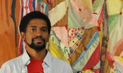
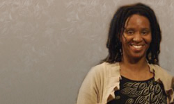

Jurors
Sedrick Huckaby
Sedrick Huckaby
 Sedrick Huckaby was born in Fort Worth, Texas in 1975. His inspiration to study art in college began while participating in the Imagination Celebration's Artist Apprenticeship Program held at the Fort Worth Modern Art Museum. As a teenager, Huckaby was involved in community outreach projects such as community murals, book illustrations, and interior design projects. During his senior year of high school, the emerging young artist received numerous local awards and three national awards.
In 1995 Sedrick Huckaby began his formal art studies at Texas Wesleyan University but transferred to Boston University, where he received a Bachelor of Fine Arts degree. Later he received his Master of Fine Art degree from Yale University. Both Boston University and Yale University offered Huckaby the opportunity to study under a stylistically diverse faculty, including Silvia Mangold, Catherine Murphy, John Walker, Alfred Leslie and Edgar Hear of Birds. Upon graduation Sedrick was the recipient of Yale University's Alice Kimbell English Traveling Fellowship, which he used to travel the United States and abroad to study the works of artist Henry Tanner.
While studying Henry Tanner, Sedrick was offered a fellowship with the Fine Arts Work Center in Provincetown, which he accepted and participated in for several months. With funds from the Mortimer Hayes Brandisc Traveling Fellowship, Huckaby traveled to Europe after the Provincetown residency. He spent most of 2000 living in France, Italy and Rome studying old master works. When Huckaby returned to the United States in 2001, he was awarded the Imagination Celebration Spirit of the Future award, an Anne Giles Kimbrough Grant, an Elizabeth Greenshield award and a Best of Show award in the 20th Carroll Harris Simms National Black Arts Competition. At the end of December 2001 he received the coveted Lewis Comfort Tiffany Award.
Throughout his college studies, Huckaby was extensively involved in the study of African-American history, art and culture. He served as a board member of Yale University's Black Activities Committee and was the teacher assistant to artist Edgar Heap of Birds. These activities brought to life the importance of diversity within the arts and in life. He says of his own work, I hope to be able to touch and influence increasingly diverse audiences with collaborative exhibitions.
Since 1996, Huckaby has exhibited his work in one-person and group shows in Boston, Massachusetts; Soho, New York; New Haven, Connecticut; Urban-Champaign, Illinois and Dallas/Fort Worth, Texas. A Love Supreme, a one-person show at the African-American Museum in Dallas, Texas, marks the pinnacle of his exhibition history. It is currently showing at the African-American Museum until May 2004.
More Information
CV
VIDEO: Sedrick Huckaby, Hidden in Plain Sight
ARTICLE: D Magazine
Letitia Huckaby
 Letitia Huckaby began her artistic career at the age of four, when her parents started her in dance classes. She studied Ballet, Tap, Jazz, and Modern dance until the age of eighteen, and was selected to participate in the prestigious Oklahoma Arts Institute two years in a row. The exposure to a variety of other art forms led her to photography as a medium.
Huckaby holds a degree in Journalism from the University of Oklahoma, a BFA from the Art Institute of Boston, Massachusetts in photography and a Master’s degree from the University of North Texas in Denton. Huckaby has exhibited at the Dallas Contemporary, the Galveston Arts Center at Galveston, Texas, Renaissance Fine Art in Harlem, New York, New York curated by Deborah Willis, PhD; the McKenna Museum in New Orleans, and the Dallas African-American Museum. Public projects include a piece along the Trinity river in Fort Worth at the 4th street trailhead site, and at the new Ella Mae Shamblee branch library in Fort Worth, Texas.
Website
CV
VIDEO: Studio Tour with Letitia Huckaby
ARTICLE: D Magazine